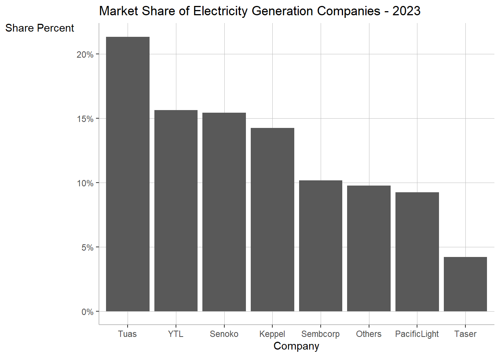
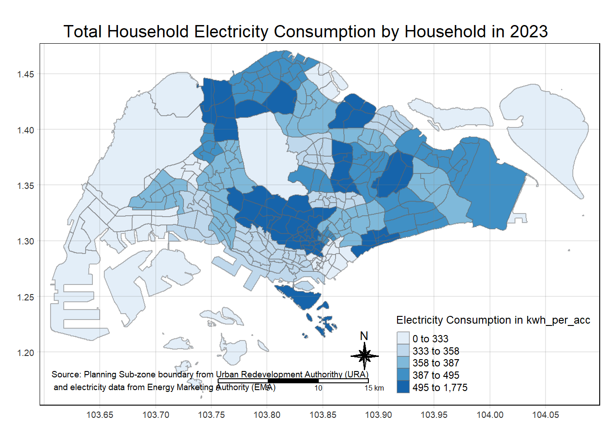
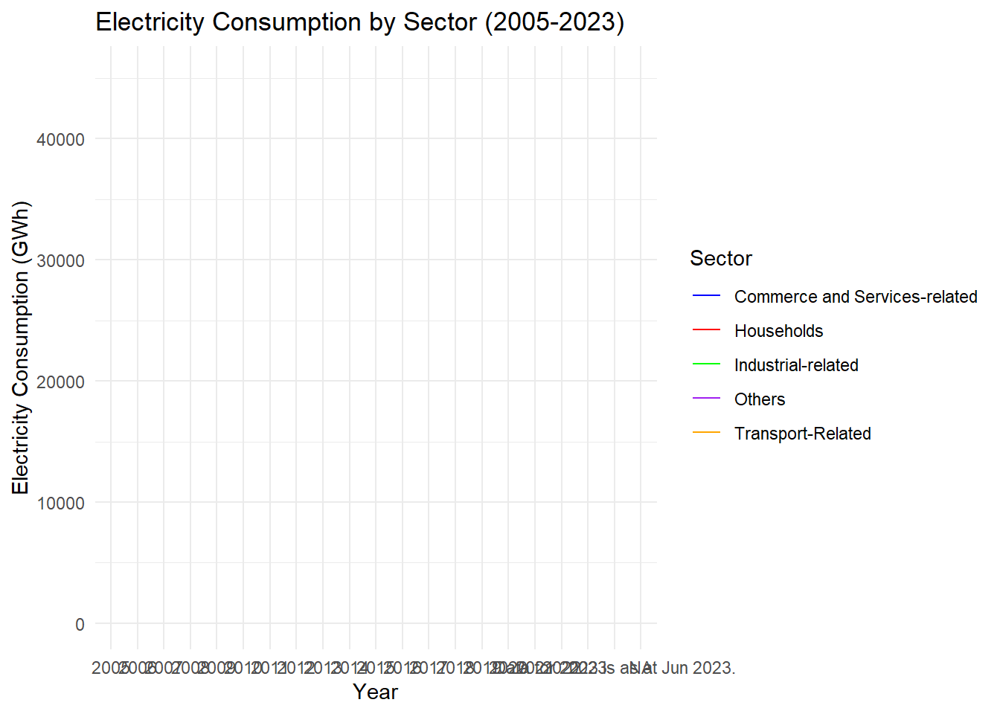
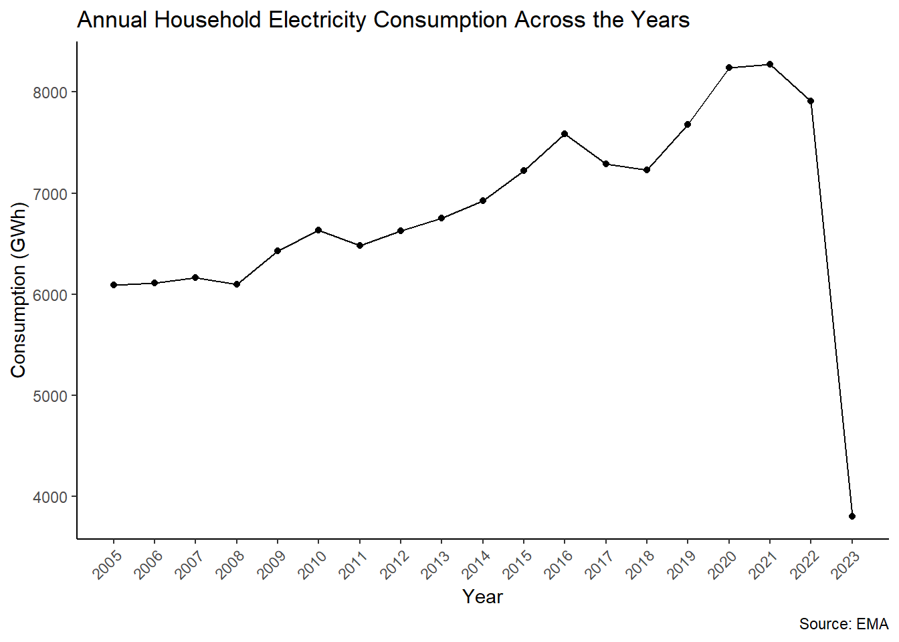
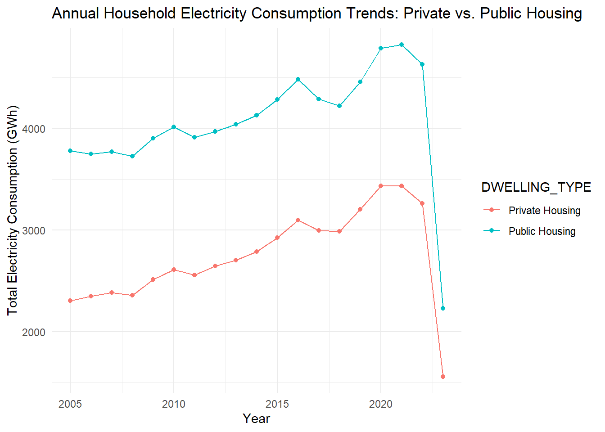
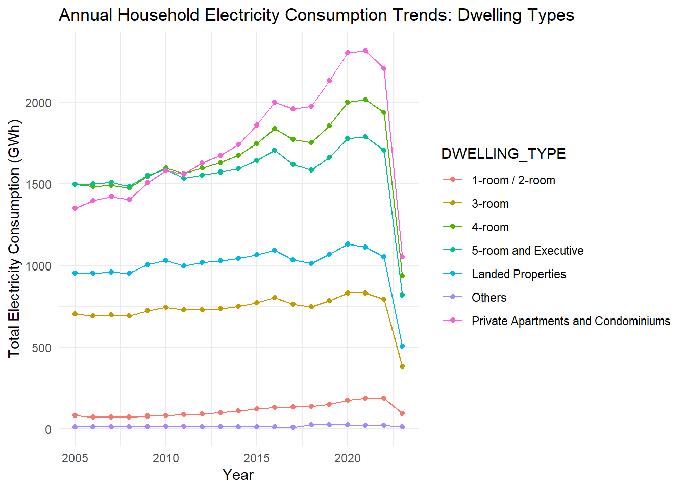

pacman::p_load(scales, viridis, lubridate, ggthemes, gridExtra, readxl, knitr, data.table, CGPfunctions, ggHoriPlot, tidyverse,sf, tmap, ggiraph, patchwork, DT, plotly)Prototype
Data Preparation 1
A specific tab will be imported to do the prototype: Market Share of Electricity Generation
SES <- read_excel("data/SES_Public_2023_tidy.xlsx", sheet = "T2.6")str(SES)tibble [155 × 3] (S3: tbl_df/tbl/data.frame)
$ year : chr [1:155] "2005" "2005" "2005" "2005" ...
$ company : chr [1:155] "Tuas Power Generation" "Senoko Energy" "YTL PowerSeraya" "Keppel Merlimau Cogen" ...
$ share_percent: chr [1:155] "23.2" "31.7" "28.1" "0" ...unique(SES$company)[1] "Tuas Power Generation" "Senoko Energy" "YTL PowerSeraya"
[4] "Keppel Merlimau Cogen" "SembCorp Cogen" "PacificLight Power"
[7] "Taser Power" "Others" NA Sample Visualisation 1: Boxplot
# Assuming 'year' is a column in your SES dataframe
filtered_data <- subset(SES, year == 2023)
# Drop rows with NA values
filtered_data <- na.omit(filtered_data)
# Define a mapping of current names to new names
filtered_data <- mutate(filtered_data, company = recode(
company, "Tuas Power Generation" = "Tuas",
"Senoko Energy" = "Senoko",
"YTL PowerSeraya" = "YTL",
"Keppel Merlimau Cogen" = "Keppel",
"SembCorp Cogen" = "Sembcorp",
"PacificLight Power" = "PacificLight",
"Taser Power" = "Taser",
"Others" = "Others"),share_percent = as.numeric(share_percent) )
ggplot(data = filtered_data, aes(x = reorder(company, -share_percent), y = share_percent)) +
geom_bar(stat = "identity") +
ggtitle("Market Share of Electricity Generation Companies - 2023") +
xlab("Company") +
ylab("Share Percent")+
scale_y_continuous(labels = scales::percent_format(scale = 1))+
theme(axis.title.y= element_text(angle=0),
axis.title.y.right = element_text(angle=0, vjust = 1),
panel.grid.major = element_line(color= 'grey', size = 0.1),
panel.background= element_blank(),
axis.line= element_line(color= 'grey'),
plot.caption = element_text(hjust = 0))
The bar graph can be further improved.
Data Preparation 2
mpsz <- st_read(dsn = "data/geospatial",
layer = "MPSZ-2019")Reading layer `MPSZ-2019' from data source
`C:\czx0727\ISSS608_Project\data\geospatial' using driver `ESRI Shapefile'
Simple feature collection with 332 features and 6 fields
Geometry type: MULTIPOLYGON
Dimension: XY
Bounding box: xmin: 103.6057 ymin: 1.158699 xmax: 104.0885 ymax: 1.470775
Geodetic CRS: WGS 84mpszSimple feature collection with 332 features and 6 fields
Geometry type: MULTIPOLYGON
Dimension: XY
Bounding box: xmin: 103.6057 ymin: 1.158699 xmax: 104.0885 ymax: 1.470775
Geodetic CRS: WGS 84
First 10 features:
SUBZONE_N SUBZONE_C PLN_AREA_N PLN_AREA_C REGION_N
1 MARINA EAST MESZ01 MARINA EAST ME CENTRAL REGION
2 INSTITUTION HILL RVSZ05 RIVER VALLEY RV CENTRAL REGION
3 ROBERTSON QUAY SRSZ01 SINGAPORE RIVER SR CENTRAL REGION
4 JURONG ISLAND AND BUKOM WISZ01 WESTERN ISLANDS WI WEST REGION
5 FORT CANNING MUSZ02 MUSEUM MU CENTRAL REGION
6 MARINA EAST (MP) MPSZ05 MARINE PARADE MP CENTRAL REGION
7 SUDONG WISZ03 WESTERN ISLANDS WI WEST REGION
8 SEMAKAU WISZ02 WESTERN ISLANDS WI WEST REGION
9 SOUTHERN GROUP SISZ02 SOUTHERN ISLANDS SI CENTRAL REGION
10 SENTOSA SISZ01 SOUTHERN ISLANDS SI CENTRAL REGION
REGION_C geometry
1 CR MULTIPOLYGON (((103.8802 1....
2 CR MULTIPOLYGON (((103.8376 1....
3 CR MULTIPOLYGON (((103.8341 1....
4 WR MULTIPOLYGON (((103.7125 1....
5 CR MULTIPOLYGON (((103.8472 1....
6 CR MULTIPOLYGON (((103.8987 1....
7 WR MULTIPOLYGON (((103.7235 1....
8 WR MULTIPOLYGON (((103.76 1.21...
9 CR MULTIPOLYGON (((103.8591 1....
10 CR MULTIPOLYGON (((103.8232 1....Import back the SES Public 2023 data but with another tab
SES_2 <- read_excel("data/SES_Public_2023_tidy.xlsx", sheet = "T3.5")It is keep to 2023, and overall with annual data
SES_2_1 <- SES_2 %>%
filter(year == 2023, month == "Annual", dwelling_type == "Overall", Description != "Central Region", Description != "North Region", Description != "North East Region",Description != "Overall", Description != "West Region")Convert areas to upper case
SES_2_1 <- SES_2_1 %>%
mutate_at(.vars = vars(Description),
.funs = funs(toupper))Combine geospatial data and SES data
mpsz_SES <- left_join(mpsz, SES_2_1,
by = c("PLN_AREA_N" = "Description"))Remove rows with na
mpsz_SES_filtered <- mpsz_SES %>%
mutate(kwh_per_acc = coalesce(kwh_per_acc, 0),dwelling_type = coalesce(dwelling_type, "NA"))%>%
select(dwelling_type,kwh_per_acc, geometry) Sample Visualisation 2: Geospatial
tmap_mode("plot")tmap mode set to plottingtmap_options(check.and.fix = TRUE)
qtm(mpsz_SES_filtered,
fill = "kwh_per_acc")
tm_shape(mpsz_SES_filtered)+
tm_fill("kwh_per_acc",
style = "quantile",
palette = "Blues",
title = "Electricity Consumption in kwh_per_acc") +
tm_layout(main.title = "Total Household Electricity Consumption by Household in 2023",
main.title.position = "center",
main.title.size = 1.2,
legend.height = 0.45,
legend.width = 0.35,
frame = TRUE) +
tm_borders(alpha = 0.5) +
tm_compass(type="8star", size = 2) +
tm_scale_bar() +
tm_grid(alpha =0.2) +
tm_credits("Source: Planning Sub-zone boundary from Urban Redevelopment Authorithy (URA)\n and electricity data from Energy Marketing Authority (EMA)",
position = c("left", "bottom"))
Data Preparation 3
A specific tab will be imported to do the prototype: Electricity Consumption by Sub-Sector (Total)
SES_3 <- read_excel("data/SES_Public_2023_tidy.xlsx", sheet = "T3.2")str(SES_3)tibble [326 × 4] (S3: tbl_df/tbl/data.frame)
$ year : chr [1:326] "2005" "2005" "2005" "2005" ...
$ sector : chr [1:326] "Commerce and Services-related" "Commerce and Services-related" "Commerce and Services-related" "Commerce and Services-related" ...
$ sub_sector : chr [1:326] "Accommodation and Food Services" "Commerce and Services-related" "Financial and Insurance Activities" "Information and Communications" ...
$ consumption_GWh: num [1:326] 1031 13076 1292 667 3613 ...unique(SES_3$sector)[1] "Commerce and Services-related" "Households"
[3] "Industrial-related" "Others"
[5] "Transport-Related" "Overall"
[7] NA consumption_by_year <- SES_3 %>%
group_by(year, sector) %>%
summarize(consumption_GWh = sum(consumption_GWh, na.rm = TRUE)) %>%
ungroup()`summarise()` has grouped output by 'year'. You can override using the
`.groups` argument.# Pivot the data to a wider format, where each sector becomes a column
consumption_wide <- consumption_by_year %>%
pivot_wider(names_from = sector, values_from = consumption_GWh)
# Generate the line plot
ggplot(data = consumption_wide, aes(x = year)) +
geom_line(aes(y = `Commerce and Services-related`, colour = "Commerce and Services-related")) +
geom_line(aes(y = Households, colour = "Households")) +
geom_line(aes(y = `Industrial-related`, colour = "Industrial-related")) +
geom_line(aes(y = `Transport-Related`, colour = "Transport-Related")) +
geom_line(aes(y = Others, colour = "Others")) +
labs(title = "Electricity Consumption by Sector (2005-2023)",
x = "Year",
y = "Electricity Consumption (GWh)",
colour = "Sector") +
theme_minimal() +
scale_colour_manual(values = c("Commerce and Services-related" = "blue",
"Households" = "red",
"Industrial-related" = "green",
"Transport-Related" = "orange",
"Others" = "purple"))Warning: Removed 2 rows containing missing values (`geom_line()`).`geom_line()`: Each group consists of only one observation.
ℹ Do you need to adjust the group aesthetic?Warning: Removed 2 rows containing missing values (`geom_line()`).`geom_line()`: Each group consists of only one observation.
ℹ Do you need to adjust the group aesthetic?Warning: Removed 2 rows containing missing values (`geom_line()`).`geom_line()`: Each group consists of only one observation.
ℹ Do you need to adjust the group aesthetic?Warning: Removed 2 rows containing missing values (`geom_line()`).`geom_line()`: Each group consists of only one observation.
ℹ Do you need to adjust the group aesthetic?Warning: Removed 2 rows containing missing values (`geom_line()`).`geom_line()`: Each group consists of only one observation.
ℹ Do you need to adjust the group aesthetic?
Data Preparation 4
Sheet 3.4 has information regarding Total Household Electricity Consumption by Dwelling Type.
SES_4 <- read_excel("data/SES_Public_2023_tidy.xlsx", sheet = "T3.4")Warning: Expecting numeric in A2414 / R2414C1: got 'Data for 2023 is as at Jun
2023.'Household Electricity Consumption Trend Across the Years
In the dataset itself, we can find the total household electricity annually by filtering the month column to only include Annual and DWELLING_TYPE to only include Overall.
filtered_data <- SES_4 %>%
filter(month == "Annual", DWELLING_TYPE == "Overall")
# If year has already been converted to a factor, revert it back to numeric for the plot
# filtered_data$year <- as.numeric(as.character(filtered_data$year))
# Plotting
ggplot(filtered_data, aes(x = year, y = consumption_GWh)) +
geom_line() + # Add line plot
geom_point() + # Add points at each year
scale_x_continuous(breaks = seq(min(filtered_data$year), max(filtered_data$year), by = 1)) + # Breaks every year
theme_classic() + # Use a minimal theme for the plot
labs(title = "Annual Household Electricity Consumption Across the Years",
x = "Year",
y = "Consumption (GWh)",
caption = "Source: EMA") +
theme(axis.text.x = element_text(angle = 45, hjust = 1)) # Rotate x-axis labels for better readability
This line graph titled “Annual Household Electricity Consumption Across the Years” displays the household electricity consumption in gigawatt-hours (GWh) from 2005 to 2023.
- Starting in 2005, there is a gradual increase in electricity consumption, rising from just above 5000 GWh to a peak of around 8000 GWh by 2021.
- The period from 2005 to 2009 shows a slight, steady increase.
- Between 2009 and 2012, the consumption appears relatively stable, with minor fluctuations.
- After 2012, there is a more noticeable increase, with the consumption climbing more steeply until around 2021, which marks the highest point on the graph. From 2021 to 2022, the consumption levels off, showing stability in usage with no significant increase or decrease.
This trend suggests that until 2022, households were either using more electricity over time or more households were added to the grid, increasing total consumption.
Public vs Private Housing: Household Electricity Consumption Trend Across the Years
In the dataset itself, we can find the total household electricity annually by filtering the month column to only include Annual and DWELLING_TYPE to only include Public Housing and Private Housing.
# Filter for only Private and Public Housing
data_filtered <- SES_4 %>%
filter(DWELLING_TYPE %in% c("Private Housing", "Public Housing"), month == "Annual")
# Aggregate electricity consumption by month and dwelling type
# Ensure 'month' is correctly formatted for your dataset. It may require conversion to a Date or factor type for proper sorting.
data_aggregated <- data_filtered %>%
group_by(DWELLING_TYPE, year) %>%
summarize(total_consumption = sum(consumption_GWh), .groups = 'drop')
# Plotting the trends
ggplot(data_aggregated, aes(x = year, y = total_consumption, color = DWELLING_TYPE)) +
geom_line() +
geom_point() +
theme_minimal() +
labs(title = "Annual Household Electricity Consumption Trends: Private vs. Public Housing",
x = "Year",
y = "Total Electricity Consumption (GWh)")
- Private Housing:
- From 2005 to around 2019, there is a gradual increase in electricity consumption in private housing.
- The trend shows some fluctuations but the general direction is upward.
- By the end of this period, the consumption seems to plateau or slightly decrease.
- Public Housing:
- The electricity consumption for public housing starts higher than private housing in 2005 and shows an overall increasing trend.
- While there are fluctuations, the trend does not show any significant drops and generally maintains an upward trajectory through the period observed.
- Comparison:
- Public housing consistently uses more electricity than private housing throughout the period from 2005 to 2023.
- The difference between public and private housing electricity consumption appears to be relatively constant, with no closing of the gap observed.
- Stability:
- Both private and public housing show some year-to-year variability; however, there are no drastic changes like the one seen in the last year, which we are disregarding due to incomplete data.
- Trends Over Time:
- The overall trend for both types of housing is increasing electricity consumption over the 15-year period.
- There is no data to suggest any long-term decrease in consumption for either housing type within the period considered.
With this in mind, the graph indicates that both private and public housing had an increasing demand for electricity from 2005 to around 2022, with public housing having a consistently higher consumption level throughout the observed period.
Different Dwelling Types: Household Electricity Consumption Trend Across the Years
In the dataset itself, we can find the total household electricity annually by filtering the month column to only include Annual and DWELLING_TYPE to include all the dwelling types.
# Filter for all the dwelling types
data_dwellingtypes <- SES_4 %>%
filter(DWELLING_TYPE %in% c("1-room / 2-room", "3-room", "4-room", "5-room and Executive", "Private Apartments and Condominiums", "Landed Properties", "Others"), month == "Annual")
# Plotting the trends
ggplot(data_dwellingtypes, aes(x = year, y = consumption_GWh, color = DWELLING_TYPE)) +
geom_line() +
geom_point() +
theme_minimal() +
labs(title = "Annual Household Electricity Consumption Trends: Dwelling Types",
x = "Year",
y = "Total Electricity Consumption (GWh)")
Statistics on Dwelling Types
tooltip <- function(y, ymax, accuracy = .01) {
mean <- scales::number(y, accuracy = accuracy)
sem <- scales::number(ymax - y, accuracy = accuracy)
paste("Mean Household Electricity Consumption:", mean, "+/-", sem)
}
gg_point <- ggplot(data=data_dwellingtypes,
aes(x = DWELLING_TYPE),
) +
stat_summary(aes(y = consumption_GWh,
tooltip = after_stat(
tooltip(y, ymax))),
fun.data = "mean_se",
geom = GeomInteractiveCol,
fill = "light blue"
) +
stat_summary(aes(y = consumption_GWh),
fun.data = mean_se,
geom = "errorbar", width = 0.2, size = 0.2
)Warning: Using `size` aesthetic for lines was deprecated in ggplot2 3.4.0.
ℹ Please use `linewidth` instead.girafe(ggobj = gg_point,
width_svg = 8,
height_svg = 8*0.618)